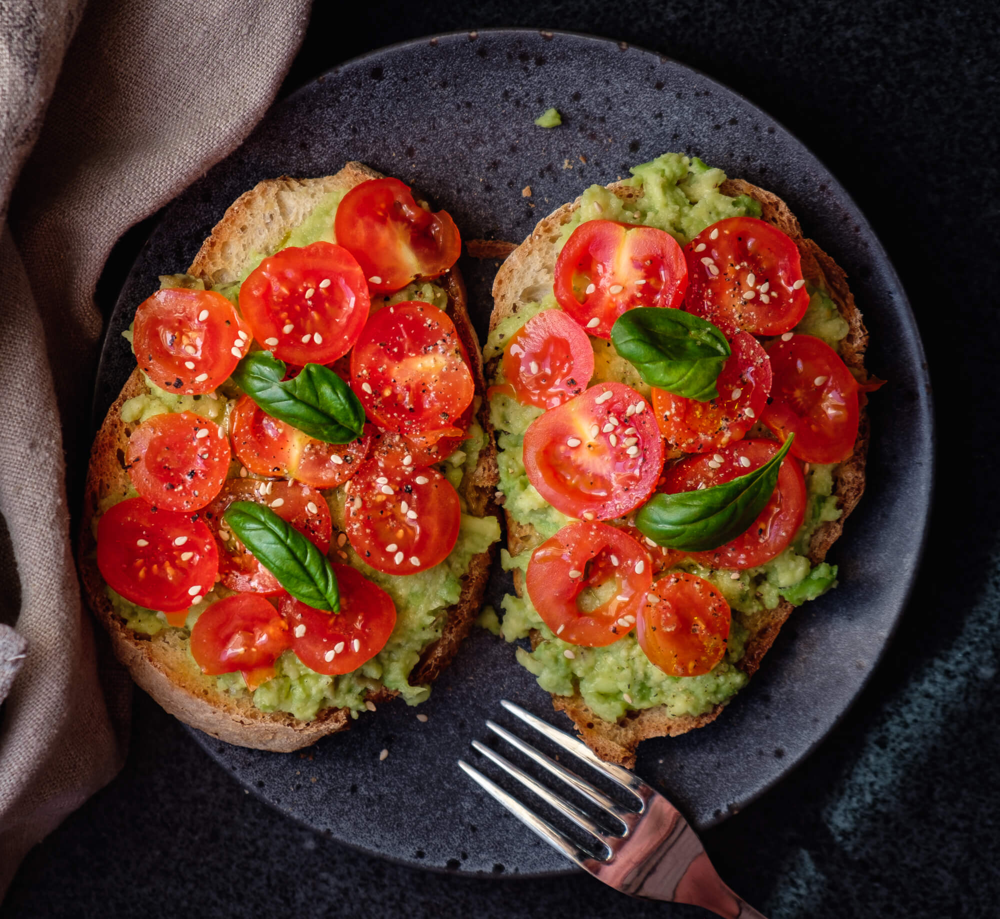

My Favorite Food
Avacodo Toast
This is the best recipe you will ever make!
Ingredients
- bread
- olive oil
- avacodo
- bacon bits
- basil
- cherry tomatoes
- salt and pepper
Directions
- wash cherry tomatoes and basil
- cut bread, cherry tomatoes, and avacodo
- spread avacodo on bread
- place cherry tomatoes
- prinkle bacon bits, salt and pepper
- poor over olive oil
For more information check out this site Enjoy!